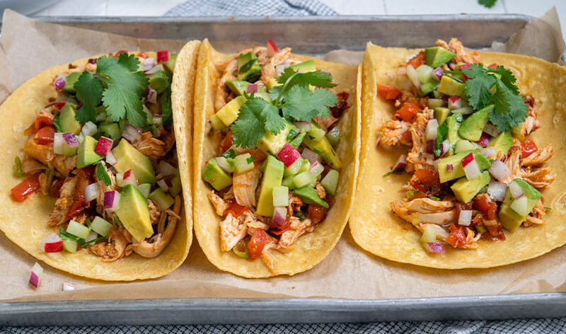
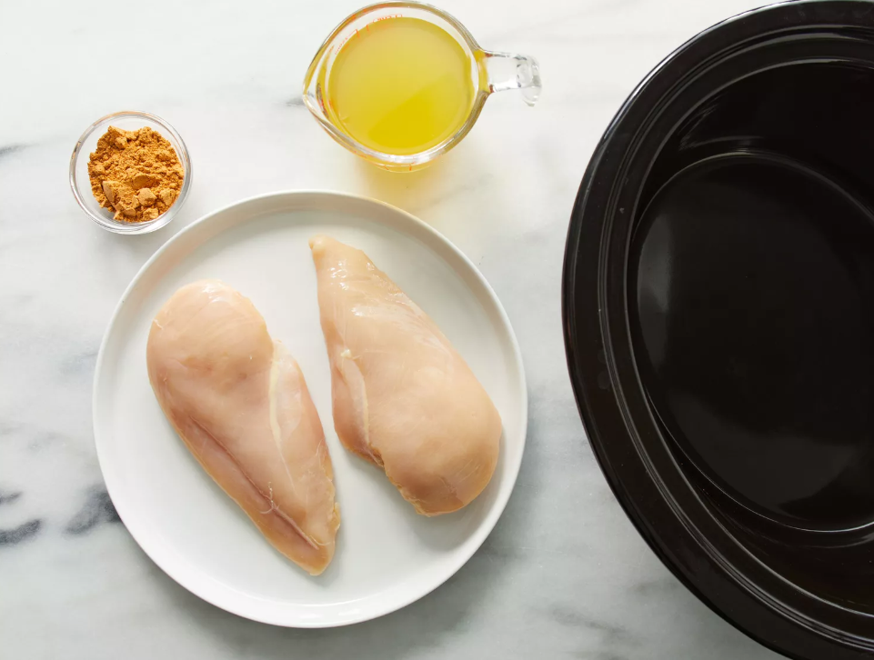
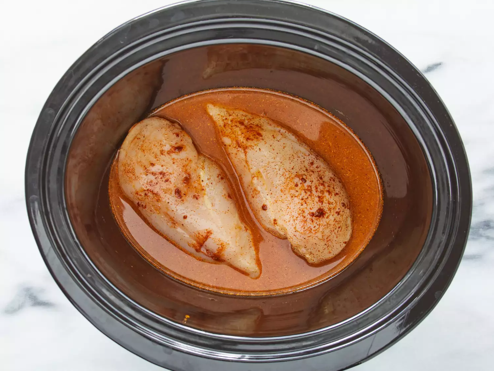
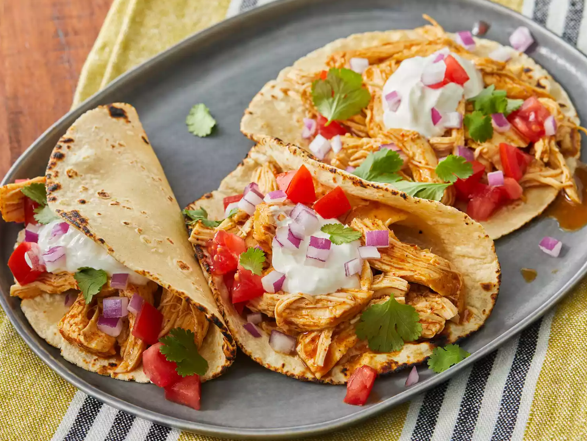

Slow Cooker Chicken Tacos
These easy slow cooker chicken tacos are easy to make with just 3 ingredients in your crockpot. Spoon the filling into warm tortillas for a very tasty meal any day of the week.
How to Make Chicken Tacos In the Slow Cooker
You'll find a detailed ingredient list and step-by-step instructions in the recipe below, but let's go over the basics:
Slow Cooker Chicken Tacos Ingredients
These are the three simple ingredients you’ll need to make these slow cooker chicken tacos:
- Broth:Start with a cup of chicken broth (store-bought or homemade).
- Taco seasoning:Use store-bought taco seasoning or make your own at home.
- Chicken:A pound of skinless, boneless chicken breasts should make eight servings.
How to Make Slow Cooker Chicken Tacos
You’ll find the full, step-by-step recipe below — but here’s a brief overview of what you can expect when you make slow cooker chicken tacos: Season the chicken, place it
in a slow cooker, and pour the broth over the chicken. Cook on Low for 6 to 8 hours, then shred the chicken before serving.
How to Assemble Slow Cooker Chicken Tacos
Spoon into warmed corn tortillas. Garnish with shredded lettuce, chopped tomatoes, and thinly sliced red onions, if desired.
Ingredients for 8 Servings
- 1 cup chicken broth
- 3 tablespoons taco seasoning mix
- 1 pound skinless, boneless chicken breasts
Directions
Step 1
Gather all ingredients.
Step 2
Combine chicken broth and taco seasoning mix in a bowl.
Step 3
Place chicken in a slow cooker. Pour chicken broth mixture over chicken.
Step 4
Cook on Low for 6 to 8 hours. Shred chicken.
Nutrition Facts
Servings Per Recipe:8
Calories:71
-------------------------------------------------------------------------------------------------------------------------------------% Daily Value *
Total Fat: 1g ------------------------------------------------------------------------------------------------------------------------ 2%
Saturated Fat: 0g ------------------------------------------------------------------------------------------------------------------ 2%
Cholesterol: 30mg ---------------------------------------------------------------------------------------------------------------- 10%
Sodium: 415mg -------------------------------------------------------------------------------------------------------------------- 18%
Total Carbohydrate: 2g ---------------------------------------------------------------------------------------------------------- 1%
Total Sugars: 1g -------------------------------------------------------------------------------------------------------------------
Protein: 11g ------------------------------------------------------------------------------------------------------------------------ 22%
Calcium: 5mg --------------------------------------------------------------------------------------------------------------------- 0%
Iron: 0mg --------------------------------------------------------------------------------------------------------------------------- 2%
Potassium: 71mg ---------------------------------------------------------------------------------------------------------------- 2%
* Percent Daily Values are based on a 2,000 calorie diet. Your daily values may be higher or lower depending on your calorie needs.
** Nutrient information is not available for all ingredients. Amount is based on available nutrient data.
(-) Information is not currently available for this nutrient. If you are following a medically restrictive diet, please consult your
doctor or registered dietitian before preparing this recipe for personal consumption.